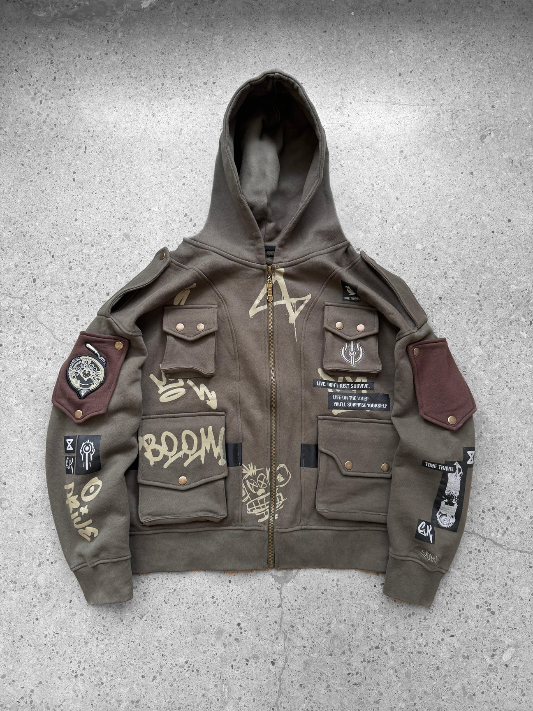
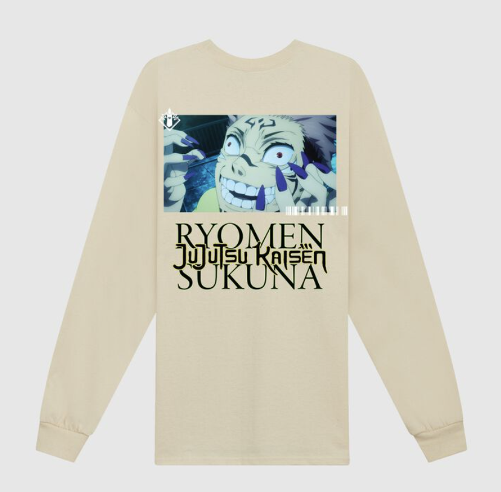
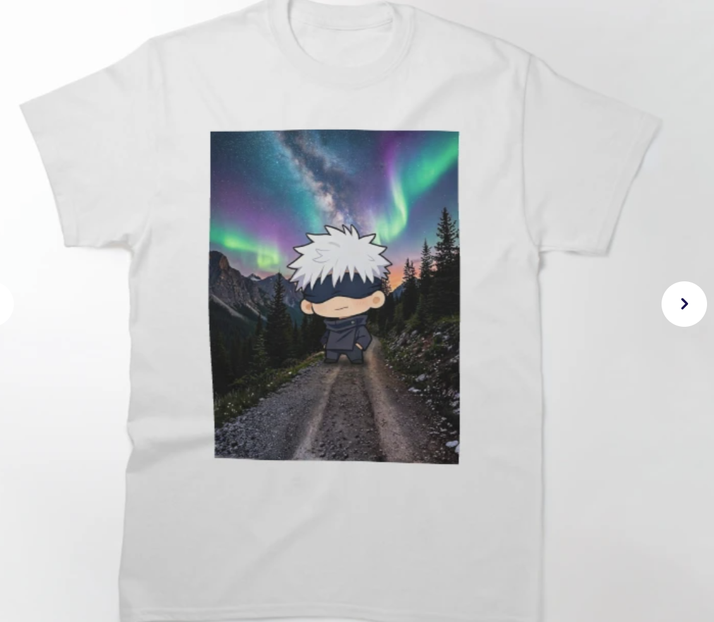
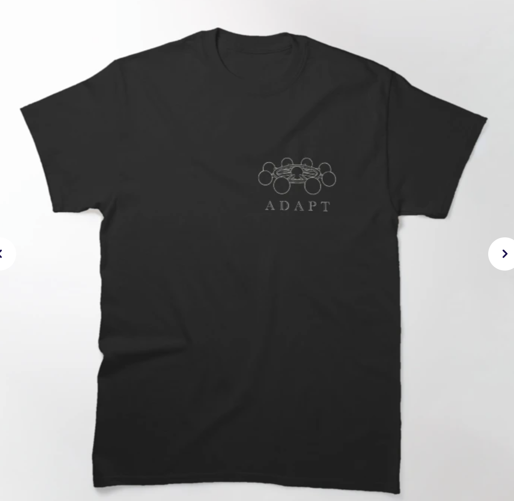
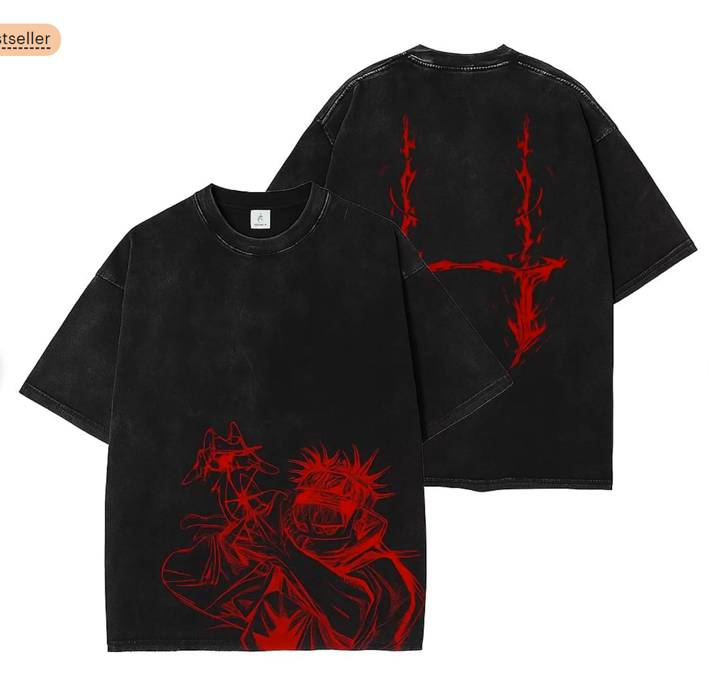
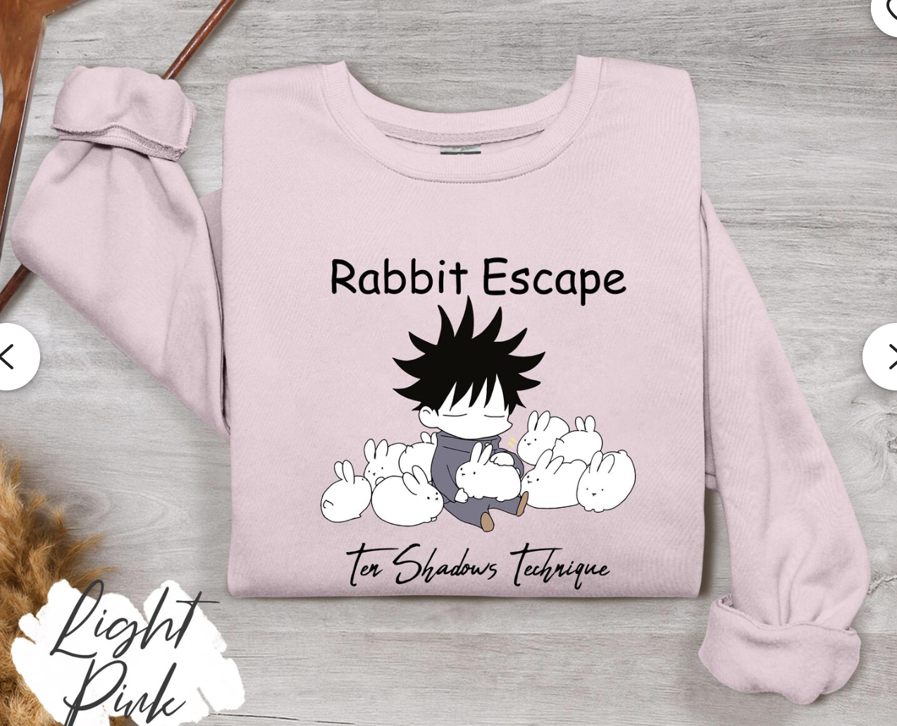

This includes anime like Dungeon Meshi, Studio Ghibli, Jujutsu Kaisen(JJK), and Demon Slayer.
Some qualities that make me think an anime is good are the animation, plot, and character depth and design.
Anime Merch
Anime Merch(andise) is pretty prevalent and there's many different kinds. Some anime has official merch, while for some animes, people sell merch on different websites, such as Etsy, and some animes actually collaborate with clothing brands, sometimes there are specific brands that only make anime inspired clothing.
Unfortunately, good anime merch is relatively hard to find, specifically anime apparal, compared to figurines or posters, as a lot of the time, the clothing is just a character's face or a graphic slapped onto a shirt or sweater with a clashing color. It seems quite low effort. While the more aesthetically pleasing anime clothing is (reasonably) quite expensive. For example, one pair of anime inspired jeans was $160, while the sweater and tops ranged from $145 to $260
Here's a few examples for comparison


The pictures above are from Sora(a brand specifically made for anime inspired clothing) and Crunchyroll(a licensed anime streaming website that collaborates with animes) respectively
The one from Sora costs $115 and looks a lot better(at least in my opinion) while the one from Crunchyroll is usually $46(still a bit pricy), but is on discount for $35
But in terms of anime apparal, there's still many other contenders to consider: websites like Etsy or Redbubble, which is individuals selling clothing and other things that they've created or designed some example of them are below.


These 2 are from Redbubble


These 2 are from Etsy
As you can see, these kinds of websites tend to have a variety of design quality
But the most important thing to consider is your own taste and your budget, not to mention, if you really can't find anything you like, you could always buy something like a figurine or a poster, which are usually a lot easier to find